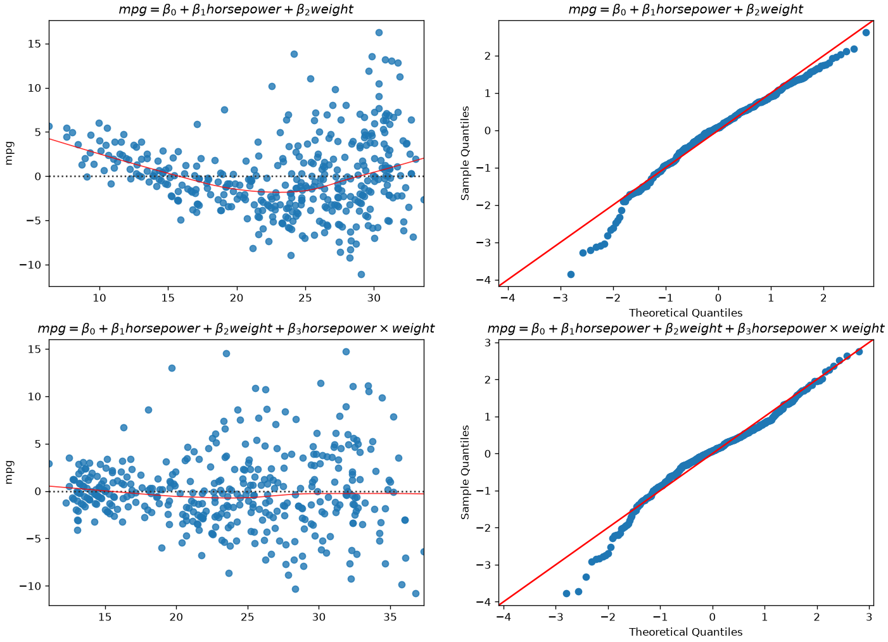
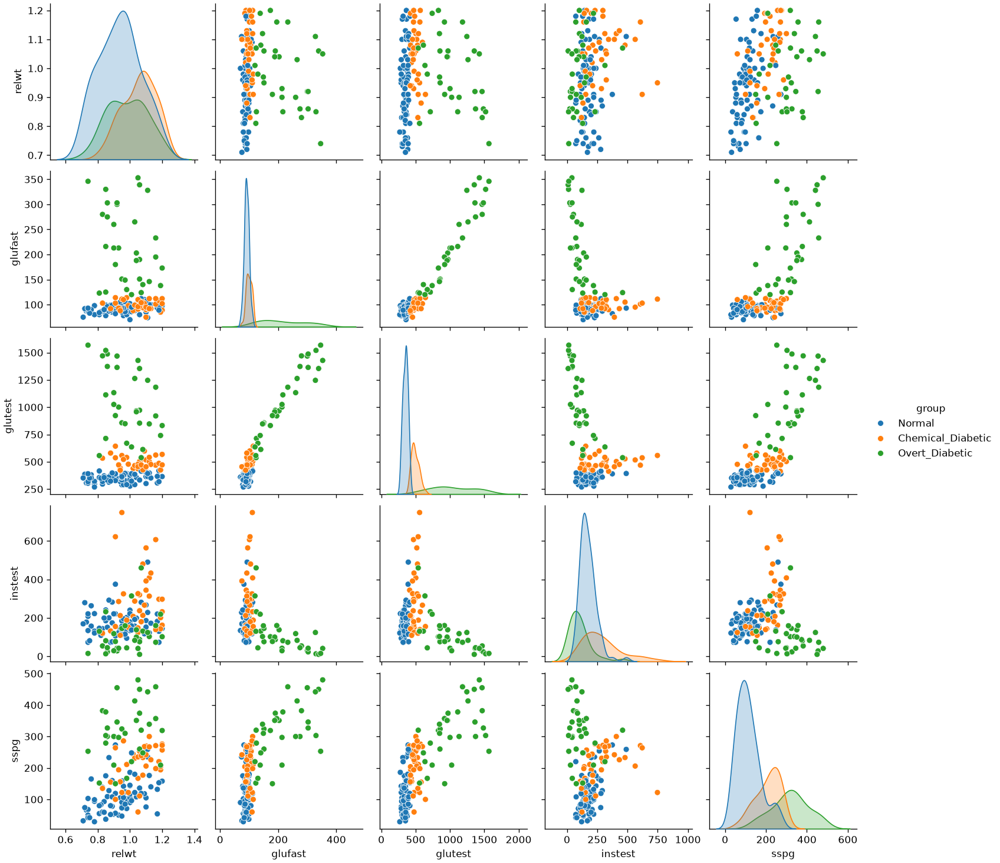
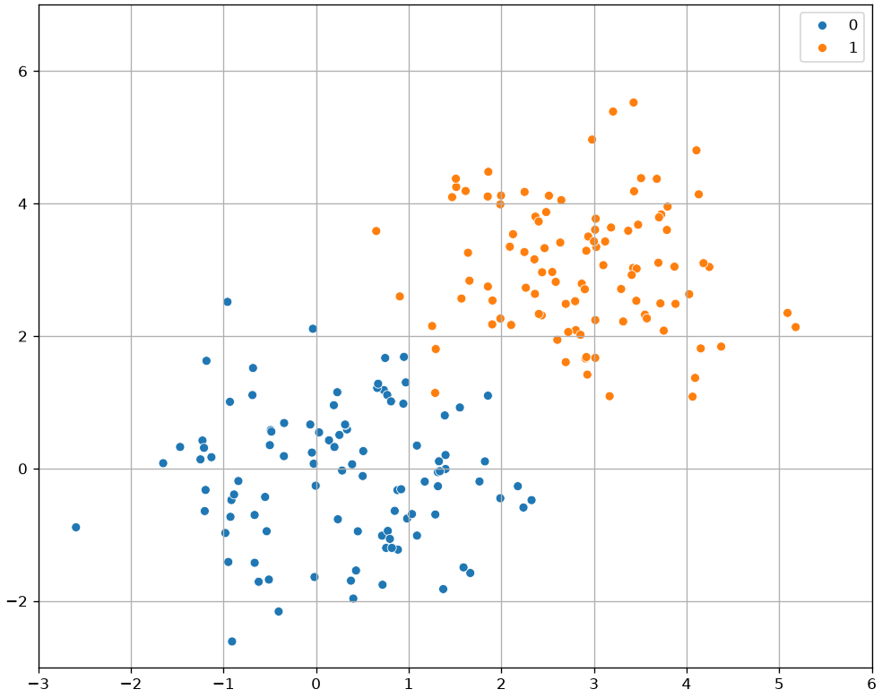
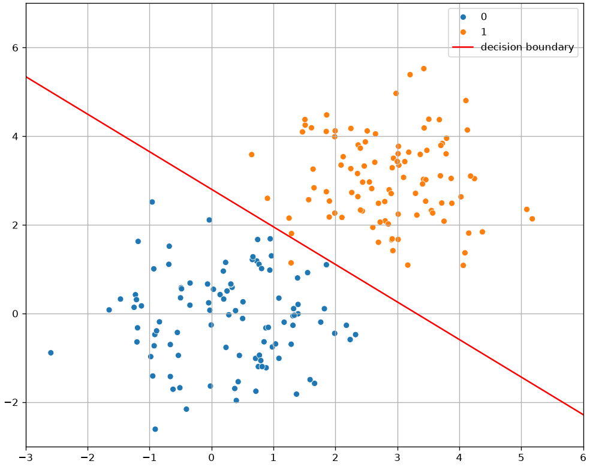

Chapter 8 and chapter 9 introduced the two workhorse regression models in their simplest form: one straight line, one logistic curve, each with its coefficients read as a statement about the phenomenon. This chapter keeps that statistical reading and relaxes three of its restrictions.
Interaction terms let the effect of one variable depend on another — the honest way to say “it depends”. Polynomial terms let a relationship bend without abandoning least squares. Multinomial logistic regression extends the logistic model from two outcomes to many.
All three are still about explaining: we fit with statsmodels, read coefficients, and check whether they say something defensible. Chapter 14 takes the same models and asks a different question — how well do they predict data they have never seen?
Extending the Linear Model with Interaction Terms
A simple linear model assumes the effect of each predictor on Y is additive. The formula
import pandas as pdimport numpy as npimport seaborn as snsimport matplotlib.pyplot as pltimport statsmodels.api as smimport statsmodels.formula.api as smf# Load and clean the data (same as last lecture)mpg = sns.load_dataset('mpg')mpg = mpg.drop('name', axis=1)mpg['horsepower'] = pd.to_numeric(mpg['horsepower'], errors='coerce')mpg = mpg.dropna()# Fit the simple additive modelmodel_additive = smf.ols('mpg ~ horsepower + weight', data=mpg).fit()# Fit the new interaction modelmodel_interaction = smf.ols('mpg ~ horsepower + weight + horsepower * weight', data=mpg).fit()print("--- Additive Model (R-squared) ---")print(f"Adj. R-squared: {model_additive.rsquared_adj:.4f}")print("\n--- Interaction Model (R-squared) ---")print(f"Adj. R-squared: {model_interaction.rsquared_adj:.4f}")print("\n--- Interaction Model Coefficients ---")print(model_interaction.summary().tables[1])
The “effect” of horsepower is no longer a single number, \beta_1. It is now (\beta_1 + \beta_3 \times \text{weight}). This means the effect of horsepowerdepends on the weight of the car.
In practice, when we increase weight by one unit, we increase the effect of horsepower on mpg by \beta_3 units. This means that for heavier cars, horsepower has a less negative effect on mpg.
This makes sense mechanically: in a very heavy car, horsepower is needed just to move it, so the efficiency penalty is smaller compared to a light car where extra horsepower is “overkill.
Let’s diagnose our residuals to see if we gained something:

The situation improved! We now have a better model, even if not perfect.
Quadratic and Polynomial Regression
We will now take another route to address our nonlinear problem. Let’s have a look at the relationship between mpg and horsepower:
Again, the model above is nonlinear in horsepower, but we can still fit it with a linear regressor if we add a new variable z=horsepower^2.
The fit model will obtain R^2=0.688, larger than the R^2=0.606 obtained by the base model (mpg = \beta_0 + \beta_1 horsepower). Both have a large F-statistic.
This approach is known as polynomial regression and allows to turn the linear regression into a nonlinear model. Note that, when we have more variables, polynomial regression also includes interaction terms. For instance, the linear model:
y = \beta_0 + \beta_1x + \beta_2y
becomes the following polynomial model of degree 2:
As usual, we only have to add new variables for the squared and interaction term and solve the problem as a linear regression one. This is easily handled by libraries. Note that, as the number of variables increases, the number of terms to add for a given degree also increases.
The key observation here is that, while the polynomial regression function is nonlinear in the variable, it is still linear in its coefficients, which makes it still solvable with ordinary least squares.
Multinomial Logistic Regression
In many cases, we want to study the relationship between a set of continuous or categorical independent variable and a non-binary categorical dependent variable.
Let us consider the diabetes dataset:
import statsmodels.api as sm# Try loading the datasetdiabetes_data = sm.datasets.get_rdataset("Diabetes", "heplots").datadiabetes_data.head()
relwt
glufast
glutest
instest
sspg
group
0
0.81
80
356
124
55
Normal
1
0.95
97
289
117
76
Normal
2
0.94
105
319
143
105
Normal
3
1.04
90
356
199
108
Normal
4
1.00
90
323
240
143
Normal
This dataset contains clinical measurements from 145 subjects, used to study glucose metabolism and insulin resistance.
It was originally presented in Data: A Collection of Problems from Many Fields (Andrews & Herzberg, 1985) and is included in the R package heplots.
Variables
relwt: Relative weight (ratio of actual to expected weight)
glufast: Fasting plasma glucose level
glutest: Glucose intolerance (oral glucose tolerance test area)
instest: Insulin response (insulin area)
sspg: Steady state plasma glucose (measure of insulin resistance)
group: Diagnostic group
Normal
Chemical_Diabetic
Overt_Diabetic
Let’s visualize the data:
import seaborn as snsimport matplotlib.pyplot as pltsns.pairplot(diabetes_data, hue='group')plt.show()

Differently from previous examples, our categorical variable contains three levels. Also, we can easily identify an interesting base class, i.e., the “Normal” group.
We will define an extension of the logistic regression model, the multinomial logistic regression model, based on this concept of “base” class.
The Multinomial Logistic Regression Model
When the dependent variable can assume more than two values, we can define the multinomial logistic regression model. In this case, we select one of the values of the dependent variable Y as a baseline class (e.g., the “Normal” group). Without loss of generality, let K be the number of classes and let Y=1 be the baseline class. Recall that in the case of the logistic regressor, we modeled the logarithm of the odd as our linear function:
Since we have more than one possible outcomes for the dependent variable, rather than modeling the odds, a multinomial logistic regressor models the logarithm of the ratio between a given class k and the baseline class 1 as follows:
Where \mathbf{\beta_k}=(\beta_0,\beta_1,\ldots,\beta_k) and \mathbf{X}=(1,x_1,\ldots,x_n).
These two expressions can be used to compute the probabilities of the classes once that the parameters have been estimated and \mathcal{x} is observed.
A note on the softmax parametrisation
Machine learning usually writes this same model without a baseline class, giving every class its own coefficient vector:
This is the softmax form. It is the same model — a reparametrisation, and an overparametrised one: adding a constant vector to every \mathbf{\beta}_k leaves all the probabilities unchanged, so the coefficients are identified only up to that shift. Choosing a baseline, as above, is exactly what removes the ambiguity, which is why statistics does it and why single coefficients can be read as log-odds ratios here and not there.
The distinction matters when you read a library’s output — scikit-learn fits the softmax form, statsmodels the baseline form — but nothing in this course depends on it, and the exam does not ask about softmax.
import statsmodels.api as smimport statsmodels.formula.api as smfimport pandas as pd# Assume you already loaded the Diabetes dataset into diabetes_data# Columns: relwt, glufast, glutest, instest, sspg, group# Recode group into integers (baseline = Normal)diabetes_data2 = diabetes_data.copy()diabetes_data2['group'] = diabetes_data2['group'].map({'Normal': 0,'Chemical_Diabetic': 1,'Overt_Diabetic': 2}).astype(int)# Fit multinomial logistic regressionmodel = smf.mnlogit("group ~ glutest", data=diabetes_data2)result = model.fit()# Summary with coefficients, standard errors, z-scores, p-valuesprint(result.summary())# Likelihood ratio test for overall model fitprint("\nModel Likelihood Ratio Test:")print(result.llr, result.llr_pvalue)
We can see that the model estimates two sets of coefficients: one for group=1 (Chemical Diabetic) and one for group=2 (Overt Diabetic). No coefficients are estimated for group=0 (Normal), which serves as the baseline category. Let us interpret the results:
Model Overview
Dependent variable: group, with three diagnostic categories
Estimation method: Maximum Likelihood Estimation (MLE)
Convergence: Successful after 14 iterations
Log-likelihood: −14.622 (final value of our cost function)
Pseudo R-squared: 0.9013 (good explanatory power)
Likelihood Ratio Test:
Statistic: 266.95
p-value: almost zero → highly significant improvement over the null model
Coefficient Interpretation
The intercept for group=1 is -90.3738. This means that the odds of being Chemical Diabetic versus Normal are e^{-90.3738} \approx 0 when glutest is zero. This is an extremely low value, indicating that when glutest is zero, it is much more probable that the subject is Normal rather than Chemical Diabetic.
The intercept for group=2 is -109.8266. This means that the odds of being Overt Diabetic versus Normal are e^{-109.8266} \approx 0 when glutest is zero. This indicates that when everything is zero, it is much more probable that the subject is Normal rather than Overt Diabetic. Hence, when glutest is zero, the subject is almost certainly Normal.
The coefficient 0.2153 for glutest in group=1 suggests that a one-unit increase in glutest increases the odds of being Chemical Diabetic versus Normal by e^{0.2153} \approx 1.24, an increase of about 24%.
The coefficient 0.2471 for glutest in group=2 implies a similar increase in odds for Overt Diabetic versus Normal: e^{0.2471} \approx 1.28, an increase of about 28%.
Geometrical Interpretation of the Coefficients of a Logistic Regressor
Similar to linear regression, also the coefficients of logistic regression have a geometrical interpretation, which is particularly interesting when treating the classifier from a purely predictive point of view. We will see that, while linear regression finds a «curve» that fits the data, logistic regression finds a hyperplane that separates the data.
Let us consider a simple example with bi-dimensional data \mathbf{x} \in \mathfrak{R}^{2} as the one shown in the following:

Let us assume that we fit a logistic regressor model to this data
We know that these parameters allow to find a probability value according to the formula above. We can use these values to classify the observations\mathbf{x}. In practice, a reasonable criterion to classify observations would be:
This makes sense as we are assigning the observations to the group for which the posterior probability P(y|\mathbf{x}) is higher.
To understand how the data is classified, we can look at those points in which the classifier is uncertain, which is often called the decision boundary, i.e., those points in which P\left( y=1 | \mathbf{x} \right) = 0.5.
Angular coefficient equal to - \frac{\beta_{1}}{\beta_{2}};
Intercept equal to - \frac{\beta_{0}}{\beta_{2}};
If we plot this line, we obtain the decision boundary which separates the elements from the two classes:

As can be seen, the decision boundary found by a logistic regressor is a line. This is because a logistic regressor is a linear classifier, despite the logistic function is not linear!
Exercises
Interaction, read aloud. Fit Fare ~ Age * C(Pclass) on the Titanic data. Write one sentence saying what the interaction term means, without using the word “interaction”.
When an interaction is not needed. Fit the same model without the interaction and compare. Does the interaction earn its parameters? Justify the answer with something other than the p-value.
Polynomial degree. Fit polynomials of degree 1 to 6 to a relationship of your choice. Plot each one. Which degree would you defend to a colleague, and on what grounds — given that this chapter has no test set?
Multinomial coefficients. Fit a multinomial logistic regression of Pclass on Fare and Age. Interpret one coefficient with respect to the baseline category, then refit with a different baseline and confirm that the conclusions do not change.
References
James, Witten, Hastie, Tibshirani, Taylor. An Introduction to Statistical Learning with Applications in Python, sections 3.3 (interactions and polynomial terms) and 4.3 (multinomial logistic regression).
Heumann, Schomaker, Shalabh. Introduction to Statistics and Data Analysis, chapter 11.
statsmodels formula API documentation, for the * and : operators.
Source Code
---title: "Extending regression models: interactions, polynomial and multinomial terms"stem: 10_extending_regressionchapter: 10format: html: code-tools: true ipynb: default---::: {.callout-tip icon=false}## Chapter resources[Slides (PDF)](../files/slides/10_extending_regression.pdf){.btn .btn-sm .btn-primary}[Open in Colab](https://colab.research.google.com/github/antoninofurnari/fad-2627/blob/main/notes/10_extending_regression.ipynb){.btn .btn-sm .btn-outline-primary}[Download PDF](../files/chapters/10_extending_regression.pdf){.btn .btn-sm .btn-outline-primary .btn-chapter-pdf}[Practice quiz](../quiz.html?bank=10){.btn .btn-sm .btn-outline-primary}:::```{python}#| echo: false# Datasets are served by the site itself, so the same code runs here, on a# local clone and on Colab. See site/data/MANIFEST.yml.from pathlib import PathDATA ="../data/"if Path("../data").is_dir() else"https://antoninofurnari.github.io/fad-2627/data/"```[Chapter 8](08_linear_regression.qmd) and[chapter 9](09_logistic_regression.qmd) introduced the two workhorse regression modelsin their simplest form: one straight line, one logistic curve, each with itscoefficients read as a statement about the phenomenon. This chapter keeps thatstatistical reading and relaxes three of its restrictions.**Interaction terms** let the effect of one variable depend on another — the honest wayto say "it depends". **Polynomial terms** let a relationship bend without abandoningleast squares. **Multinomial logistic regression** extends the logistic model from twooutcomes to many.All three are still about *explaining*: we fit with `statsmodels`, read coefficients,and check whether they say something defensible.[Chapter 14](14_regression_for_prediction.qmd) takes the same models and asks adifferent question — how well do they predict data they have never seen?## Extending the Linear Model with Interaction TermsA simple linear model assumes the effect of each predictor on $Y$ is **additive**. The formula$$mpg = \beta_0 + \beta_1 \text{horsepower} + \beta_2 \text{weight}$$assumes that the effect of 1 unit of `horsepower` (which is $\beta_1$) is **constant**, regardless of the car's `weight`.Is that true? We can test this by adding an **interaction term**:$$mpg = \beta_0 + \beta_1 \text{horsepower} + \beta_2 \text{weight} + \beta_3 (\text{horsepower} \times \text{weight})$$```{python}import pandas as pdimport numpy as npimport seaborn as snsimport matplotlib.pyplot as pltimport statsmodels.api as smimport statsmodels.formula.api as smf# Load and clean the data (same as last lecture)mpg = sns.load_dataset('mpg')mpg = mpg.drop('name', axis=1)mpg['horsepower'] = pd.to_numeric(mpg['horsepower'], errors='coerce')mpg = mpg.dropna()# Fit the simple additive modelmodel_additive = smf.ols('mpg ~ horsepower + weight', data=mpg).fit()# Fit the new interaction modelmodel_interaction = smf.ols('mpg ~ horsepower + weight + horsepower * weight', data=mpg).fit()print("--- Additive Model (R-squared) ---")print(f"Adj. R-squared: {model_additive.rsquared_adj:.4f}")print("\n--- Interaction Model (R-squared) ---")print(f"Adj. R-squared: {model_interaction.rsquared_adj:.4f}")print("\n--- Interaction Model Coefficients ---")print(model_interaction.summary().tables[1])```### Interpreting the InteractionNotice two things:1. The **Adj. R-squared** increased! This indicates the interaction model is a better fit.2. The p-value for the `horsepower:weight` term is tiny ($< 0.001$). This confirms the interaction is statistically significant.But how do we interpret the coefficient for `horsepower`?We can rewrite the formula:$$mpg = \beta_0 + (\beta_1 + \beta_3 \times \text{weight}) \times \text{horsepower} + \beta_2 \text{weight}$$The "effect" of `horsepower` is no longer a single number, $\beta_1$. It is now $(\beta_1 + \beta_3 \times \text{weight})$. This means the effect of `horsepower` *depends on* the `weight` of the car.In practice, **when we increase `weight` by one unit, we increase the effect of `horsepower` on `mpg` by $\beta_3$ units**. This means that for heavier cars, `horsepower` has a less negative effect on `mpg`.This makes sense mechanically: in a very heavy car, horsepower is needed just to move it, so the efficiency penalty is smaller compared to a light car where extra horsepower is “overkill.Let's diagnose our residuals to see if we gained something:```{python}#| echo: falsefrom statsmodels.formula.api import olsdata=mpgplt.figure(figsize=(14,10))fitted = ols("mpg ~ horsepower + weight", data.dropna()).fit().fittedvalues.fillna(0)sns.residplot(x=fitted, y='mpg', data=data.dropna(),lowess=True,line_kws={'color': 'red', 'lw': 1, 'alpha': 0.8}, ax=plt.subplot(221))plt.title("$mpg = \\beta_0 + \\beta_1 horsepower + \\beta_2 weight$")sm.qqplot(fitted-data.dropna()['mpg'], line='45',fit=True, ax=plt.subplot(222))plt.title("$mpg = \\beta_0 + \\beta_1 horsepower + \\beta_2 weight$")fitted = ols("mpg ~ horsepower + weight + horsepower*weight", data.dropna()).fit().fittedvalues.fillna(0)sns.residplot(x=fitted, y='mpg', data=data.dropna(),lowess=True,line_kws={'color': 'red', 'lw': 1, 'alpha': 0.8}, ax=plt.subplot(223))plt.title("$mpg = \\beta_0 + \\beta_1 horsepower + \\beta_2 weight + \\beta_3 horsepower \\times weight$")sm.qqplot(fitted-data.dropna()['mpg'], line='45',fit=True, ax=plt.subplot(224))plt.title("$mpg = \\beta_0 + \\beta_1 horsepower + \\beta_2 weight + \\beta_3 horsepower \\times weight$")plt.show()```The situation improved! We now have a better model, even if not perfect.## Quadratic and Polynomial RegressionWe will now take another route to address our nonlinear problem. Let's have a look at the relationship between `mpg` and `horsepower`:```{python}sns.scatterplot(x='horsepower',y='mpg',data=data)plt.show()```This relationship does not look linear. It looks instead as a quadratic, which would be fit by the following model:$$mpg = \beta_0 + \beta_1 horsepower + \beta_2 horsepower^2$$Again, the model above is nonlinear in `horsepower`, but we can still fit it with a linear regressor if we add a new variable $z=horsepower^2$. The fit model will obtain $R^2=0.688$, larger than the $R^2=0.606$ obtained by the base model ($mpg = \beta_0 + \beta_1 horsepower$). Both have a large F-statistic.The estimated coefficients are:```{python}ols("mpg ~ horsepower + I(horsepower**2)", data).fit().summary().tables[1]```The coefficients now describe the quadratic:$$y = 56.9001 - 0.4662 x + 0.0012 x^2$$If we plot it on the data, we obtain the following:```{python}model=ols("mpg ~ horsepower + I(horsepower**2)", data).fit()b0, b1, b2 = model.params.valuessns.scatterplot(x='horsepower',y='mpg',data=data)x = np.linspace(40,240,200)y = b0+b1*x+b2*x**2plt.plot(x,y,'r')plt.show()```### Polynomial RegressionIn general, we can fit a polynomial model to the data, choosing a suitable degree $d$. For instance, for $d=4$ we have:$$mpg = \beta_0 + \beta_1 horsepower + \beta_2 horsepower^2 + \beta_3 horsepower^3 + \beta_4 horsepower^4$$which identifies the following fit:```{python}model=ols("mpg ~ horsepower + I(horsepower**2) + I(horsepower**3) + I(horsepower**4)", data).fit()b0, b1, b2, b3,b4 = model.params.valuessns.scatterplot(x='horsepower',y='mpg',data=data)x = np.linspace(40,240,200)y = b0+b1*x+b2*x**2+b3*x**3+b4*x**4plt.plot(x,y,'r')plt.show()```This approach is known as **polynomial regression** and allows to turn the linear regression into a nonlinear model. Note that, when we have more variables, polynomial regression also includes interaction terms. For instance, the linear model:$$y = \beta_0 + \beta_1x + \beta_2y$$becomes the following polynomial model of degree $2$:$$y = \beta_0 + \beta_1x + \beta_2y + \beta_3x^2 + \beta_4y^2 + \beta_5 xy$$As usual, we only have to add new variables for the squared and interaction term and solve the problem as a linear regression one. This is easily handled by libraries. Note that, as the number of variables increases, the number of terms to add for a given degree also increases.> The key observation here is that, while the polynomial regression function is **nonlinear in the variable**, it is still **linear in its coefficients**, which makes it still solvable with ordinary least squares.## Multinomial Logistic RegressionIn many cases, we want to study the relationship between a set of **continuous or categorical independent variable and a non-binary categorical dependent variable**. Let us consider the `diabetes` dataset:```{python}import statsmodels.api as sm# Try loading the datasetdiabetes_data = sm.datasets.get_rdataset("Diabetes", "heplots").datadiabetes_data.head()```This dataset contains clinical measurements from $145$ subjects, used to study glucose metabolism and insulin resistance. It was originally presented in *Data: A Collection of Problems from Many Fields* (Andrews & Herzberg, 1985) and is included in the R package **heplots**.### Variables- **relwt**: Relative weight (ratio of actual to expected weight) - **glufast**: Fasting plasma glucose level - **glutest**: Glucose intolerance (oral glucose tolerance test area) - **instest**: Insulin response (insulin area) - **sspg**: Steady state plasma glucose (measure of insulin resistance) - **group**: Diagnostic group - *Normal* - *Chemical_Diabetic* - *Overt_Diabetic*Let's visualize the data:```{python}import seaborn as snsimport matplotlib.pyplot as pltsns.pairplot(diabetes_data, hue='group')plt.show()```Differently from previous examples, our categorical variable contains three levels. Also, we can easily identify an interesting **base class**, i.e., the "Normal" group.We will define an extension of the logistic regression model, the multinomial logistic regression model, based on this concept of "base" class.### The Multinomial Logistic Regression ModelWhen the dependent variable can assume more than two values, **we can define the multinomial logistic regression model**. In this case, we select one of the values of the dependent variable $Y$ as **a baseline class** (e.g., the "Normal" group). Without loss of generality, let $K$ be the number of classes and let $Y=1$ be the baseline class. Recall that in the case of the logistic regressor, we modeled the logarithm of the odd as our linear function:$$\log \left(\frac{P(y=1|\mathbf{x})}{1-P(y=1|\mathbf{x})}\right) = \beta_0 + \beta_1 x_1 + \ldots + \beta_n x_n$$Since we have more than one possible outcomes for the dependent variable, rather than modeling the odds, a multinomial logistic regressor models the logarithm of the ratio between a given class $k$ and the baseline class $1$ as follows:$$\log\left( \frac{P(Y=k|X=\mathbf{x})}{P(Y=1|X=\mathbf{x})} \right) = \beta_{k0} + \beta_{k1} x_1 + \ldots + \beta_{kn} x_n$$Note that, in practice, we need to define a different linear combination for each class $k = 1 \ldots K$, hence we need $(n+1) \times (k-1)$ parameters.Doing the math, it can be shown that:$$ P(Y=k|X=\mathbf{x}) = \frac{e^{\mathbf{\beta_k}^T\mathbf{X}}}{1+\sum_{l=2}^K \mathbf{e^{\beta_l^T\mathbf{X}}}}$$$$ P(Y=1|X=\mathbf{x}) = \frac{1}{1+\sum_{l=2}^K \mathbf{e^{\beta_l^T\mathbf{X}}}}$$Where $\mathbf{\beta_k}=(\beta_0,\beta_1,\ldots,\beta_k)$ and $\mathbf{X}=(1,x_1,\ldots,x_n)$.These two expressions can be used to compute the probabilities of the classes once that the parameters have been estimated and $\mathcal{x}$ is observed.::: {.callout-note}## A note on the softmax parametrisationMachine learning usually writes this same model without a baseline class, giving everyclass its own coefficient vector:$$P(Y=k|X=\mathbf{x}) = \frac{e^{\mathbf{\beta}_k^T\mathbf{X}}}{\sum_{l=1}^{K} e^{\mathbf{\beta}_l^T\mathbf{X}}}$$This is the **softmax** form. It is the same model — a *reparametrisation*, and an**overparametrised** one: adding a constant vector to every $\mathbf{\beta}_k$ leavesall the probabilities unchanged, so the coefficients are identified only up to thatshift. Choosing a baseline, as above, is exactly what removes the ambiguity, which iswhy statistics does it and why single coefficients can be read as log-odds ratios hereand not there.The distinction matters when you read a library's output — `scikit-learn` fits thesoftmax form, `statsmodels` the baseline form — but nothing in this course depends onit, and **the exam does not ask about softmax**.:::Let's fit the following model:$$\text{group} = \beta_0 + \beta_1 \text{relwt} + \beta_1 \text{glutest}$$We obtain the following results:```{python}import statsmodels.api as smimport statsmodels.formula.api as smfimport pandas as pd# Assume you already loaded the Diabetes dataset into diabetes_data# Columns: relwt, glufast, glutest, instest, sspg, group# Recode group into integers (baseline = Normal)diabetes_data2 = diabetes_data.copy()diabetes_data2['group'] = diabetes_data2['group'].map({'Normal': 0,'Chemical_Diabetic': 1,'Overt_Diabetic': 2}).astype(int)# Fit multinomial logistic regressionmodel = smf.mnlogit("group ~ glutest", data=diabetes_data2)result = model.fit()# Summary with coefficients, standard errors, z-scores, p-valuesprint(result.summary())# Likelihood ratio test for overall model fitprint("\nModel Likelihood Ratio Test:")print(result.llr, result.llr_pvalue)```We can see that the model estimates two sets of coefficients: one for `group=1` (Chemical Diabetic) and one for `group=2` (Overt Diabetic). No coefficients are estimated for `group=0` (Normal), which serves as the baseline category. Let us interpret the results:### Model Overview- **Dependent variable**: `group`, with three diagnostic categories- **Predictors included**: `glutest` (glucose intolerance)- **Estimation method**: Maximum Likelihood Estimation (MLE)- **Convergence**: Successful after 14 iterations- **Log-likelihood**: −14.622 (final value of our cost function)- **Pseudo R-squared**: 0.9013 (good explanatory power)- **Likelihood Ratio Test**: - Statistic: 266.95 - p-value: almost zero → highly significant improvement over the null model### Coefficient Interpretation* The intercept for `group=1` is -90.3738. This means that the odds of being *Chemical Diabetic* versus *Normal* are $e^{-90.3738} \approx 0$ when `glutest` is zero. This is an extremely low value, indicating that when `glutest` is zero, it is much more probable that the subject is *Normal* rather than *Chemical Diabetic*.* The intercept for `group=2` is -109.8266. This means that the odds of being *Overt Diabetic* versus *Normal* are $e^{-109.8266} \approx 0$ when `glutest` is zero. This indicates that when everything is zero, it is much more probable that the subject is *Normal* rather than *Overt Diabetic*. Hence, when `glutest` is zero, the subject is almost certainly *Normal*.* The coefficient 0.2153 for `glutest` in `group=1` suggests that a one-unit increase in `glutest` increases the odds of being *Chemical Diabetic* versus *Normal* by $e^{0.2153} \approx 1.24$, an increase of about **24%**.* The coefficient 0.2471 for `glutest` in `group=2` implies a similar increase in odds for *Overt Diabetic* versus *Normal*: $e^{0.2471} \approx 1.28$, an increase of about **28%**.## Geometrical Interpretation of the Coefficients of a Logistic RegressorSimilar to linear regression, also the coefficients of logisticregression have a geometrical interpretation, which is particularly interesting when treating the classifier from a purely predictive point of view. We will see that, whilelinear regression finds a «curve» that fits the data, logisticregression finds a hyperplane that separates the data.Let us consider a simple example with bi-dimensional data$\mathbf{x} \in \mathfrak{R}^{2}$ as the one shown in the following:```{python}#| echo: falseimport numpy as npx=np.array(list(np.random.normal(0,1,100))+list(np.random.normal(3,1,100)))y=np.array(list(np.random.normal(0,1,100))+list(np.random.normal(3,1,100)))l=np.array([0]*100+[1]*100)plt.figure(figsize=(10,8))sns.scatterplot(x=x,y=y,hue=l)plt.xlim([-3,6])plt.ylim([-3,7])plt.legend()plt.grid()plt.show()```Let us assume that we fit a logistic regressor model to this data$$P\left( y=1 | \mathbf{x} \right) = \frac{1}{1 + e^{- {(\beta}_{0} + \beta_{1}x_{1} + \beta_{2}x_{2})}}$$and find the following values for the parameters:$$\left\{ \begin{matrix}\beta_{0} = - 3.47 \\\beta_{1} = 1.17 \\\beta_{2} = 1.43 \\\end{matrix} \right.\ $$We know that these parameters allow to find a probability value according to the formula above.We can use these values to **classify the observations** $\mathbf{x}$. In practice, a reasonable criterion to classify observations would be:$$\hat y = \begin{cases}1 & \text{if } P(y=1|\mathbf{x}) \geq 0.5\\0 & \text{otherwise}\end{cases}$$This makes sense as we are assigning the observations to the group for which the posterior probability $P(y|\mathbf{x})$ is higher. To understand how the data is classified, we can look at those points inwhich the classifier is uncertain, which is often called **the decision boundary**, i.e.,those points in which $P\left( y=1 | \mathbf{x} \right) = 0.5$.We note that:$$P\left(y=1 | \mathbf{x} \right) = 0.5 \Leftrightarrow e^{- (\beta_{0} + \beta_{1}x_{1} + \beta_{2}x_{2})} = 1 \Leftrightarrow 0 = \beta_{0} + \beta_{1}x_{1} + \beta_{2}x_{2}$$This last equation is the equation of a line (in the form$ax + by + c = 0$). We can see it in explicit form:$$x_{2} = - \frac{\beta_{1}}{\beta_{2}}x_{1} - \frac{\beta_{0}}{\beta_{2}}$$So, we have found a line which has a- Angular coefficient equal to $- \frac{\beta_{1}}{\beta_{2}}$;- Intercept equal to $- \frac{\beta_{0}}{\beta_{2}}$;If we plot this line, we obtain the **decision boundary** whichseparates the elements from the two classes:```{python}#| echo: falsefrom sklearn.linear_model import LogisticRegressionlr = LogisticRegression()lr.fit(np.vstack([x,y]).T,l)xx = np.linspace(-3,6)yy =-lr.coef_[0][0]/lr.coef_[0][1]*xx-lr.intercept_/lr.coef_[0][1]plt.figure(figsize=(10,8))sns.scatterplot(x=x,y=y,hue=l)plt.xlim([-3,6])plt.ylim([-3,7])plt.plot(xx,yy,'r', label='decision boundary')plt.legend()plt.grid()plt.show()```As can be seen, the decision boundary found by a logistic regressor is aline. This is because **a logistic regressor is a linear classifier**,despite the logistic function is not linear!## Exercises1. **Interaction, read aloud.** Fit `Fare ~ Age * C(Pclass)` on the Titanic data. Write one sentence saying what the interaction term means, without using the word "interaction".2. **When an interaction is not needed.** Fit the same model without the interaction and compare. Does the interaction earn its parameters? Justify the answer with something other than the p-value.3. **Polynomial degree.** Fit polynomials of degree 1 to 6 to a relationship of your choice. Plot each one. Which degree would you defend to a colleague, and on what grounds — given that this chapter has no test set?4. **Multinomial coefficients.** Fit a multinomial logistic regression of `Pclass` on`Fare` and `Age`. Interpret one coefficient with respect to the baseline category, then refit with a different baseline and confirm that the conclusions do not change.## References- James, Witten, Hastie, Tibshirani, Taylor. *An Introduction to Statistical Learning with Applications in Python*, sections 3.3 (interactions and polynomial terms) and 4.3 (multinomial logistic regression).- Heumann, Schomaker, Shalabh. *Introduction to Statistics and Data Analysis*, chapter 11.- `statsmodels` formula API documentation, for the `*` and `:` operators.